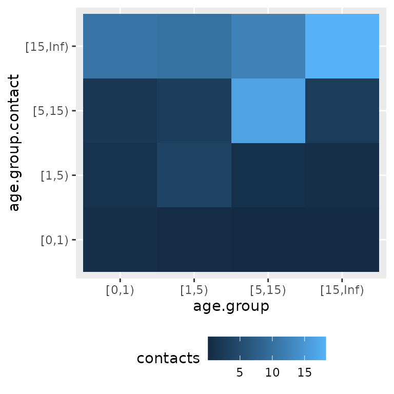
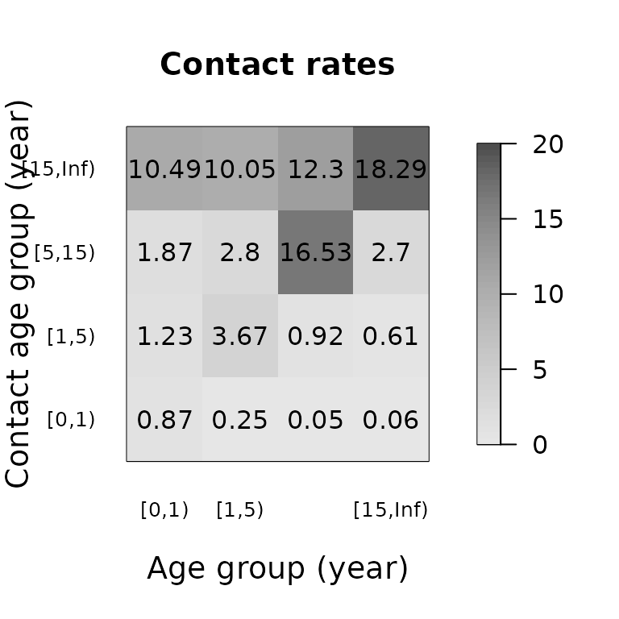

Introduction to socialmixr
Sebastian Funk
2026-04-29
Source:vignettes/socialmixr.Rmd
socialmixr.Rmdsocialmixr
is an R package to derive social mixing matrices from
survey data. These are particularly useful for age-structured infectious
disease models. For background on age-specific mixing matrices and
what data inform them, see, for example, the paper on POLYMOD by (Mossong et al.
2008).
Setup
This vignette uses the POLYMOD survey data which is included in socialmixr, and ggplot2 for plotting. To download other surveys from the Social contact data community on Zenodo, use the contactsurveys package.
library(socialmixr)
library(ggplot2)
data(polymod)The pipeline workflow
socialmixr provides a small set of composable functions
that each perform one step in turning a survey into a contact
matrix:
-
survey[expr]– filter participants or contacts with an expression. -
assign_age_groups()– impute missing ages and assign participants and contacts to age groups. -
weigh()– optionally attach participant weights (day of week, age, user-defined). -
compute_matrix()– compute the mean contact matrix. -
symmetrise(),split_matrix(),per_capita()– optional post-processing.
A minimal example extracting a matrix for the UK part of POLYMOD:
polymod[country == "United Kingdom"] |>
assign_age_groups(age_limits = c(0, 1, 5, 15)) |>
compute_matrix()
#>
#> ── Contact matrix (4 age groups) ──
#>
#> Ages: "[0,1)", "[1,5)", "[5,15)", and "[15,Inf)"
#> Participants: 1011
#>
#> contact.age.group
#> age.group [0,1) [1,5) [5,15) [15,Inf)
#> [0,1) 0.40000000 0.8000000 1.266667 5.933333
#> [1,5) 0.11250000 1.9375000 1.462500 5.450000
#> [5,15) 0.02450980 0.5049020 7.946078 6.215686
#> [15,Inf) 0.03230337 0.3581461 1.290730 9.594101This produces a contact matrix with age groups 0-1, 1-5, 5-15 and 15+ years. It contains the mean number of contacts that each member of an age group (row) has reported with members of the same or another age group (column).
Assigning age groups
assign_age_groups() prepares the survey for matrix
computation. It imputes participant and contact ages from any available
ranges, drops or keeps rows with missing ages (configurable via
missing_participant_age and
missing_contact_age), and adds age.group and
contact.age.group columns using the age_limits
you supply:
uk_grouped <- polymod[country == "United Kingdom"] |>
assign_age_groups(age_limits = c(0, 1, 5, 15))
head(uk_grouped$participants[, c("part_id", "part_age", "age.group")])
#> part_id part_age age.group
#> <int> <int> <fctr>
#> 1: 4536 0 [0,1)
#> 2: 4538 0 [0,1)
#> 3: 4540 0 [0,1)
#> 4: 4541 0 [0,1)
#> 5: 4542 0 [0,1)
#> 6: 4546 0 [0,1)
head(uk_grouped$contacts[, c("part_id", "cnt_age", "contact.age.group")])
#> part_id cnt_age contact.age.group
#> <int> <int> <fctr>
#> 1: 4517 4 [1,5)
#> 2: 4517 40 [15,Inf)
#> 3: 4517 31 [15,Inf)
#> 4: 4517 52 [15,Inf)
#> 5: 4517 29 [15,Inf)
#> 6: 4517 59 [15,Inf)The resulting survey object can be inspected, subset, or passed
through any number of weigh() calls before
compute_matrix(). If no age_limits are
supplied, age groups are inferred from participant and contact ages.
Surveys
Some surveys contain data from multiple countries. The POLYMOD survey, for example, contains data from:
unique(polymod$participants$country)
#> [1] Italy Germany Luxembourg Netherlands Poland
#> [6] United Kingdom Finland Belgium
#> 8 Levels: Belgium Finland Germany Italy Luxembourg Netherlands ... United KingdomUse the subset method [ on a survey to restrict to one
or more countries or any other column in the participant or contact
data:
polymod[country %in% c("United Kingdom", "Germany")]
#> $participants
#> Key: <hh_id>
#> hh_id part_id part_gender part_occupation part_occupation_detail
#> <char> <int> <char> <int> <int>
#> 1: Mo08HH1000 1000 F 1 8
#> 2: Mo08HH1001 1001 M 1 8
#> 3: Mo08HH1002 1002 F 1 6
#> 4: Mo08HH1003 1003 F 1 7
#> 5: Mo08HH1004 1004 F 1 8
#> ---
#> 2349: Mo08HH995 995 M 4 8
#> 2350: Mo08HH996 996 F 3 6
#> 2351: Mo08HH997 997 F 5 NA
#> 2352: Mo08HH998 998 M 4 7
#> 2353: Mo08HH999 999 M 1 7
#> part_education part_education_length participant_school_year
#> <int> <int> <int>
#> 1: 2 12 NA
#> 2: 2 12 NA
#> 3: 6 18 NA
#> 4: 2 12 NA
#> 5: 1 10 NA
#> ---
#> 2349: 2 12 NA
#> 2350: 2 12 NA
#> 2351: 1 10 NA
#> 2352: 2 12 NA
#> 2353: 2 12 NA
#> participant_nationality child_care child_care_detail child_relationship
#> <char> <char> <int> <int>
#> 1: Y NA NA
#> 2: Y NA 2
#> 3: Y NA 1
#> 4: Y NA 1
#> 5: Y NA 2
#> ---
#> 2349: Y NA 1
#> 2350: Y NA 1
#> 2351: Y NA 1
#> 2352: Y NA 1
#> 2353: Y NA 2
#> child_nationality problems diary_how diary_missed_unsp diary_missed_skin
#> <char> <char> <int> <int> <int>
#> 1: 1 NA NA
#> 2: NA NA NA
#> 3: NA NA NA
#> 4: NA NA NA
#> 5: NA NA NA
#> ---
#> 2349: NA NA NA
#> 2350: 1 NA NA
#> 2351: 1 NA NA
#> 2352: 1 NA NA
#> 2353: 1 NA NA
#> diary_missed_noskin sday_id type day month year dayofweek hh_age_1
#> <int> <int> <int> <int> <int> <int> <int> <int>
#> 1: NA 20060612 3 12 6 2006 1 7
#> 2: NA 20060522 3 22 5 2006 1 7
#> 3: NA 20060522 3 22 5 2006 1 7
#> 4: NA 20060520 3 20 5 2006 6 7
#> 5: NA 20060526 3 26 5 2006 5 29
#> ---
#> 2349: NA 20060618 3 18 6 2006 0 8
#> 2350: NA 20060117 3 17 1 2006 2 7
#> 2351: NA 20060618 3 18 6 2006 0 7
#> 2352: NA 20060706 3 6 7 2006 4 7
#> 2353: NA 20060612 3 12 6 2006 1 1
#> hh_age_2 hh_age_3 hh_age_4 hh_age_5 hh_age_6 hh_age_7 hh_age_8 hh_age_9
#> <int> <int> <int> <int> <int> <int> <int> <int>
#> 1: 32 NA NA NA NA NA NA NA
#> 2: 14 37 41 NA NA NA NA NA
#> 3: 11 33 37 NA NA NA NA NA
#> 4: 31 34 NA NA NA NA NA NA
#> 5: NA NA NA NA NA NA NA NA
#> ---
#> 2349: 14 15 44 NA NA NA NA NA
#> 2350: 16 40 NA NA NA NA NA NA
#> 2351: 11 15 40 44 NA NA NA NA
#> 2352: 22 48 50 NA NA NA NA NA
#> 2353: 7 25 29 NA NA NA NA NA
#> hh_age_10 hh_age_11 hh_age_12 hh_age_13 hh_age_14 hh_age_15 hh_age_16
#> <int> <int> <int> <int> <int> <int> <lgcl>
#> 1: NA NA NA NA NA NA NA
#> 2: NA NA NA NA NA NA NA
#> 3: NA NA NA NA NA NA NA
#> 4: NA NA NA NA NA NA NA
#> 5: NA NA NA NA NA NA NA
#> ---
#> 2349: NA NA NA NA NA NA NA
#> 2350: NA NA NA NA NA NA NA
#> 2351: NA NA NA NA NA NA NA
#> 2352: NA NA NA NA NA NA NA
#> 2353: NA NA NA NA NA NA NA
#> hh_age_17 hh_age_18 hh_age_19 hh_age_20 class_size country hh_size
#> <lgcl> <lgcl> <lgcl> <lgcl> <int> <fctr> <int>
#> 1: NA NA NA NA 22 Germany 2
#> 2: NA NA NA NA 22 Germany 4
#> 3: NA NA NA NA 18 Germany 4
#> 4: NA NA NA NA 20 Germany 3
#> 5: NA NA NA NA 10 Germany 1
#> ---
#> 2349: NA NA NA NA 15 Germany 4
#> 2350: NA NA NA NA 9 Germany 3
#> 2351: NA NA NA NA 28 Germany 5
#> 2352: NA NA NA NA 21 Germany 4
#> 2353: NA NA NA NA 30 Germany 4
#> part_age_exact
#> <int>
#> 1: 7
#> 2: 7
#> 3: 7
#> 4: 7
#> 5: 7
#> ---
#> 2349: 7
#> 2350: 7
#> 2351: 7
#> 2352: 7
#> 2353: 7
#>
#> $contacts
#> cont_id part_id cnt_age_exact cnt_age_est_min cnt_age_est_max cnt_gender
#> <int> <int> <int> <int> <int> <char>
#> 1: 16785 846 43 NA NA M
#> 2: 16786 846 70 NA NA F
#> 3: 16787 846 68 NA NA M
#> 4: 16788 846 11 NA NA F
#> 5: 16789 846 13 NA NA F
#> ---
#> 22531: 77894 5522 NA 10 20 F
#> 22532: 77895 5522 35 NA NA F
#> 22533: 77896 5522 50 NA NA M
#> 22534: 77897 5522 NA 30 40 M
#> 22535: 77898 5522 NA 40 50 M
#> cnt_home cnt_work cnt_school cnt_transport cnt_leisure cnt_otherplace
#> <int> <int> <int> <int> <int> <int>
#> 1: 1 0 0 0 1 1
#> 2: 1 0 0 0 1 0
#> 3: 1 0 0 0 1 0
#> 4: 0 0 0 0 1 0
#> 5: 1 0 0 0 1 0
#> ---
#> 22531: 1 0 0 0 0 0
#> 22532: 1 0 0 0 0 0
#> 22533: 0 1 0 0 0 0
#> 22534: 0 1 0 0 0 0
#> 22535: 0 1 0 0 0 0
#> frequency_multi phys_contact duration_multi
#> <int> <int> <int>
#> 1: 1 1 5
#> 2: 1 1 3
#> 3: 1 1 3
#> 4: 2 1 4
#> 5: 1 1 4
#> ---
#> 22531: 1 2 1
#> 22532: 1 1 5
#> 22533: 2 1 3
#> 22534: 2 2 3
#> 22535: 1 1 4
#>
#> $reference
#> $reference$title
#> [1] "POLYMOD social contact data"
#>
#> $reference$bibtype
#> [1] "Misc"
#>
#> $reference$author
#> [1] "Joël Mossong" "Niel Hens"
#> [3] "Mark Jit" "Philippe Beutels"
#> [5] "Kari Auranen" "Rafael Mikolajczyk"
#> [7] "Marco Massari" "Stefania Salmaso"
#> [9] "Gianpaolo Scalia Tomba" "Jacco Wallinga"
#> [11] "Janneke Heijne" "Malgorzata Sadkowska-Todys"
#> [13] "Magdalena Rosinska" "W. John Edmunds"
#>
#> $reference$year
#> [1] 2017
#>
#> $reference$note
#> [1] "Version 1.1"
#>
#> $reference$doi
#> [1] "10.5281/zenodo.1157934"
#>
#>
#> attr(,"class")
#> [1] "contact_survey"When participants are filtered, contacts are automatically pruned to matching participants. If this subsetting is not done, the different sub-surveys contained in a dataset are combined as if they were a single sample (i.e., not applying any population-weighting by country or other correction).
Bootstrapping
To get an idea of the uncertainty in the contact matrices, participants can be resampled with replacement. A short helper replicates participant (and matching contact) rows for each occurrence of a resampled ID, so that duplicates are preserved:
bootstrap <- function(survey) {
sampled_ids <- sample(
unique(survey$participants$part_id),
replace = TRUE
)
survey$participants <- survey$participants[
list(sampled_ids), on = "part_id"
]
survey$contacts <- survey$contacts[
list(sampled_ids),
on = "part_id",
nomatch = NULL,
allow.cartesian = TRUE
]
survey
}
uk <- polymod[country == "United Kingdom"] |>
assign_age_groups(age_limits = c(0, 1, 5, 15))
m <- suppressWarnings(
replicate(n = 5, uk |> bootstrap() |> compute_matrix())
)
mr <- Reduce("+", lapply(m["matrix", ], function(x) x / ncol(m)))
mr
#> contact.age.group
#> age.group [0,1) [1,5) [5,15) [15,Inf)
#> [0,1) 0.86707602 1.2341520 1.873860 10.49181
#> [1,5) 0.25116125 3.6745839 2.798376 10.05348
#> [5,15) 0.05037865 0.9228788 16.525251 12.29984
#> [15,Inf) 0.06248427 0.6102873 2.696695 18.29206From these matrices, derived quantities can be obtained, for example the mean across samples as shown above.
Demography
Obtaining symmetric contact matrices, splitting out their components
(see below) and population-based participant weights require information
about the underlying demographic composition of the survey population.
This is represented as a data.frame with columns
lower.age.limit (the lower end of each age group) and
population (the number of people in that age group).
For recent UN World Population Prospects data, the
wpp2024 package is available from GitHub
(remotes::install_github("PPgp/wpp2024")):
data("popAge1dt", package = "wpp2024")
uk_pop <- popAge1dt[name == "United Kingdom" & year == 2020,
.(lower.age.limit = age, population = pop * 1000)
]
head(uk_pop)
#> lower.age.limit population
#> <int> <num>
#> 1: 0 703192
#> 2: 1 732072
#> 3: 2 762303
#> 4: 3 787284
#> 5: 4 812300
#> 6: 5 814132Any comparable data frame will work, e.g. constructed by hand:
custom_pop <- data.frame(
lower.age.limit = c(0, 18, 60),
population = c(12000000, 35000000, 20000000)
)If the survey has a country column,
survey_country_population() looks up country- and
year-specific population data:
survey_country_population(polymod, countries = "United Kingdom")
#> lower.age.limit population
#> <int> <num>
#> 1: 0 3453670
#> 2: 5 3558887
#> 3: 10 3826567
#> 4: 15 3960166
#> 5: 20 3906577
#> 6: 25 3755132
#> 7: 30 4169859
#> 8: 35 4694734
#> 9: 40 4655093
#> 10: 45 3989175
#> 11: 50 3615150
#> 12: 55 3902231
#> 13: 60 3126452
#> 14: 65 2710063
#> 15: 70 2352113
#> 16: 75 1964744
#> 17: 80 1480606
#> 18: 85 757996
#> 19: 90 324245
#> 20: 95 74738
#> 21: 100 8553
#> lower.age.limit population
#> <int> <num>This uses the older wpp2017
package, an optional (Suggests) dependency that needs to be installed
separately. It is kept for backwards compatibility; use more recent
population data (as shown above) where possible.
Symmetric contact matrices
Conceivably, contact matrices should be symmetric: the total number of contacts made by members of one age group with those of another should be the same as vice versa. Mathematically, if is the mean number of contacts made by members of age group with members of age group , and the total number of people in age group is , then
Because of variation in the sample from which the contact matrix is obtained, this relationship is usually not fulfilled exactly. In order to obtain a symmetric contact matrix that fulfills it, one can use
To get this version of the contact matrix, pipe the matrix through
symmetrise(), passing the population data:
uk_pop <- survey_country_population(polymod, countries = "United Kingdom")
polymod[country == "United Kingdom"] |>
assign_age_groups(age_limits = c(0, 1, 5, 15)) |>
compute_matrix() |>
symmetrise(survey_pop = uk_pop)
#> contact.age.group
#> age.group [0,1) [1,5) [5,15) [15,Inf)
#> [0,1) 0.40000000 0.6250000 0.764365 4.122919
#> [1,5) 0.15625000 1.9375000 1.406063 5.929829
#> [5,15) 0.07148821 0.5260153 7.946078 7.428739
#> [15,Inf) 0.05759306 0.3313352 1.109550 9.594101Contact rates per capita
The contact matrix per capita contains the social contact rates of one individual of age with one individual of age , given the population details. For example, is used in infectious disease modelling to calculate the force of infection, which is based on the likelihood that one susceptible individual of age will be in contact with one infectious individual of age . The contact rates per capita are calculated as follows:
Pipe the matrix through per_capita() to convert to
per-capita rates. If combined with symmetrise(), the
contact matrix
can show asymmetry if the sub-population sizes are different, but the
contact matrix per capita will be fully symmetric:
de_pop <- survey_country_population(polymod, countries = "Germany")
polymod[country == "Germany"] |>
assign_age_groups(age_limits = c(0, 60)) |>
compute_matrix() |>
symmetrise(survey_pop = de_pop) |>
per_capita(survey_pop = de_pop)
#> contact.age.group
#> age.group [0,60) [60,Inf)
#> [0,60) 1.261735e-07 4.418248e-08
#> [60,Inf) 4.418248e-08 1.047852e-07Splitting contact matrices
split_matrix() decomposes the contact matrix into a
global component as well as components representing
contacts, assortativity and demography. The
elements
of the contact matrix are modelled as
where is the mean number of contacts across the whole population, is the number of contacts that a member of group makes across age groups, and is the proportion of the surveyed population in age group . The constant is set so that is equal to the value of the largest eigenvalue of ; if used in an infectious disease model and assumed that every contact leads to infection, can be replaced by the basic reproduction number .
split_matrix() returns the assortativity matrix
in $matrix, with additional components
$mean.contacts
(),
$normalisation
()
and $contacts
().
polymod[country == "United Kingdom"] |>
assign_age_groups(age_limits = c(0, 1, 5, 15)) |>
compute_matrix() |>
split_matrix(survey_pop = uk_pop)
#> Warning: Not all age groups represented in population data (5-year age band).
#> ℹ Linearly estimating age group sizes from the 5-year bands.
#>
#> ── Contact matrix (4 age groups) ──
#>
#> Ages: "[0,1)", "[1,5)", "[5,15)", and "[15,Inf)"
#> Participants: 1011
#> Mean contacts: 11.55
#>
#> contact.age.group
#> age.group [0,1) [1,5) [5,15) [15,Inf)
#> [0,1) 4.1561551 2.0780776 1.230914 0.8611839
#> [1,5) 1.0955555 4.7169752 1.332022 0.7413849
#> [5,15) 0.1456110 0.7498969 4.415104 0.5158328
#> [15,Inf) 0.2500527 0.6930808 0.934443 1.0374170Filtering
The [ method can be used to select particular
participants or contacts. For example, in the polymod
dataset, the indicators cnt_home, cnt_work,
cnt_school, cnt_transport,
cnt_leisure and cnt_otherplace take value 0 or
1 depending on where a contact occurred. The filter is evaluated against
whichever table contains the referenced columns (participants, contacts,
or both). Multiple filters can be chained:
# contact matrix for school-related contacts
polymod[cnt_school == 1] |>
assign_age_groups(age_limits = c(0, 20, 60)) |>
compute_matrix()
#> contact.age.group
#> age.group [0,20) [20,60) [60,Inf)
#> [0,20) 5.15826279 1.09311741 0.03570114
#> [20,60) 0.45610034 0.47434436 0.01453820
#> [60,Inf) 0.08917836 0.07314629 0.03507014
# contact matrix for work-related contacts involving physical contact
polymod[cnt_work == 1][phys_contact == 1] |>
assign_age_groups(age_limits = c(0, 20, 60)) |>
compute_matrix()
#> contact.age.group
#> age.group [0,20) [20,60) [60,Inf)
#> [0,20) 0.04266274 0.06325855 0.009194557
#> [20,60) 0.16020525 1.26966933 0.145952109
#> [60,Inf) 0.04212638 0.29287864 0.062186560
# contact matrix for daily contacts at home with males
polymod[cnt_home == 1][cnt_gender == "M"][duration_multi == 5] |>
assign_age_groups(age_limits = c(0, 20, 60)) |>
compute_matrix()
#> contact.age.group
#> age.group [0,20) [20,60) [60,Inf)
#> [0,20) 0.39242369 0.5855094 0.03089371
#> [20,60) 0.25919589 0.3940690 0.04875962
#> [60,Inf) 0.05717151 0.1153460 0.23871615Participant weights
Temporal aspects and demography
Participant weights are commonly used to align sample and population characteristics in terms of temporal aspects and the age distribution. For example, the day of the week has been reported as a driving factor for social contact behaviour, hence to obtain a weekly average, the survey data should represent the weekly 2/5 distribution of weekend/week days. To align the survey data to this distribution, one can obtain participant weights in the form of: with sample size , and and the number of participants that were surveyed during weekdays and weekend days, respectively.
Another driver of social contact patterns is age. To improve the representativeness of survey data, age-specific weights can be calculated as: with the population size, the population fraction of age , the survey sample size and the survey fraction of age . The combination of age-specific and temporal weights for participant of age can be constructed as:
If the social contact analysis is based on stratification by
splitting the population into non-overlapping groups, it requires the
weights to be standardised so that the weighted totals within mutually
exclusive cells equal the known population totals (Kolenikov
2016). The post-stratification cells need to be mutually
exclusive and cover the whole population. compute_matrix()
applies this post-stratification normalisation within age groups.
weigh() is composable: each call multiplies new weights
into the participants’ weight column. In POLYMOD, the
dayofweek column uses 0 for Sunday and 6 for Saturday, so
weekdays are 1-5 and weekend days are 0 and 6:
polymod[country == "United Kingdom"] |>
assign_age_groups(age_limits = c(0, 18, 60)) |>
weigh("dayofweek", target = c(5, 2), groups = list(1:5, c(0, 6))) |>
weigh("part_age", target = uk_pop) |>
compute_matrix()
#> contact.age.group
#> age.group [0,18) [18,60) [60,Inf)
#> [0,18) 7.637824 5.372202 0.4878625
#> [18,60) 2.279212 7.924999 1.0941688
#> [60,Inf) 1.187088 5.303965 2.2302108The first weigh() call assigns weekday participants a
total weight of 5 and weekend participants a total weight of 2 (the
weekly 5/2 split). The second call post-stratifies against the
population structure in uk_pop (passed as a data
frame).
User-defined participant weights
weigh() with no target multiplies an
existing participant column directly into the weight. For instance, to
give more importance to participants from large households:
polymod |>
assign_age_groups(age_limits = c(0, 18, 60)) |>
weigh("hh_size") |>
compute_matrix()
#> contact.age.group
#> age.group [0,18) [18,60) [60,Inf)
#> [0,18) 8.9599558 5.907367 0.7338418
#> [18,60) 2.4650353 10.960550 1.2399199
#> [60,Inf) 0.9909593 5.659468 2.7081868Weight threshold
If the survey population differs extensively from the demography,
some participants can end up with relatively high weights and as such,
an excessive contribution to the population average. This warrants the
limitation of single participant influences by a truncation of the
weights. compute_matrix() accepts a numeric
weight_threshold which caps the standardised weights and
re-normalises so that the weight sum equals the group size. Weights
close to the threshold may slightly exceed it after
re-normalisation.
polymod[country == "United Kingdom"] |>
assign_age_groups(age_limits = c(0, 18, 60)) |>
weigh("dayofweek", target = c(5, 2), groups = list(1:5, c(0, 6))) |>
weigh("part_age", target = uk_pop) |>
compute_matrix(weight_threshold = 3)
#> contact.age.group
#> age.group [0,18) [18,60) [60,Inf)
#> [0,18) 7.637824 5.372202 0.4878625
#> [18,60) 2.282014 7.932570 1.0774717
#> [60,Inf) 1.110740 5.275613 2.2700262Numerical example
With these numeric examples, we show the importance of post-stratification weights in contrast to using the crude weights directly within age-groups. We will apply the weights by age and day of week separately in these examples, though the combination is straightforward via multiplication.
Get survey data
We start from a survey including 6 participants of 1, 2 and 3 years of age. The ages are not equally represented in the sample, though we assume they are equally present in the reference population. We will calculate the weighted average number of contacts by age and by age group, using {1,2} and {3} years of age. The following table shows the reported number of contacts per participant , represented by :
| age | day.of.week | age.group | m_i |
|---|---|---|---|
| 1 | weekend | A | 3 |
| 1 | weekend | A | 2 |
| 2 | weekend | A | 9 |
| 2 | week | A | 10 |
| 2 | week | A | 8 |
| 3 | week | B | 15 |
The summary statistics for the sample (N) and reference population (P) are as follows
N <- 6
N_age <- c(2, 3, 1)
N_age.group <- c(5, 1)
N_day.of.week <- c(3, 3)
P <- 3000
P_age <- c(1000, 1000, 1000)
P_age.group <- c(2000, 1000)
P_day.of.week <- c(5 / 7, 2 / 7) * 3000This survey data results in an unweighted average number of contacts:
#> unweighted average number of contacts: 7.83and age-specific unweighted averages on the number of contacts:
| age | age.group | m_i |
|---|---|---|
| 1 | A | 2.5 |
| 2 | A | 9.0 |
| 3 | B | 15.0 |
Weight by day of week
The following table contains the participants weights based on the survey day with and without the population and sample size constants ( and , respectively). Note that the standardised weights and are the same:
| age | day.of.week | age.group | m_i | w | w_tilde | w_dot | w_dot_tilde |
|---|---|---|---|---|---|---|---|
| 1 | weekend | A | 3 | 0.57 | 0.57 | 285.71 | 0.57 |
| 1 | weekend | A | 2 | 0.57 | 0.57 | 285.71 | 0.57 |
| 2 | weekend | A | 9 | 0.57 | 0.57 | 285.71 | 0.57 |
| 2 | week | A | 10 | 1.43 | 1.43 | 714.29 | 1.43 |
| 2 | week | A | 8 | 1.43 | 1.43 | 714.29 | 1.43 |
| 3 | week | B | 15 | 1.43 | 1.43 | 714.29 | 1.43 |
Note the different scale of and , and the more straightforward interpretation of the numerical value of in terms of relative differences to apply truncation. Using the standardised weights, we are able to calculate the weighted number of contacts:
| age | day.of.week | age.group | m_i | w | w_tilde | m_i * w_tilde |
|---|---|---|---|---|---|---|
| 1 | weekend | A | 3 | 0.57 | 0.57 | 1.71 |
| 1 | weekend | A | 2 | 0.57 | 0.57 | 1.14 |
| 2 | weekend | A | 9 | 0.57 | 0.57 | 5.13 |
| 2 | week | A | 10 | 1.43 | 1.43 | 14.30 |
| 2 | week | A | 8 | 1.43 | 1.43 | 11.44 |
| 3 | week | B | 15 | 1.43 | 1.43 | 21.45 |
#> weighted average number of contacts: 9.2If the population-based weights are directly used in age-specific groups, the contact behaviour of the 3 year-old participant, which participated during week day, is inflated due to the under-representation of week days in the survey sample. In addition, the number of contacts for 1 year-old participants is decreased because of the over-representation of weekend days in the survey. Using the population-weights within the two aggregated age groups, we obtain a more intuitive weighting for age group A, but it is still skewed for individuals in age group B. As such, this weighted average for age group B has no meaning in terms of social contact behaviour:
|
|
If we subdivide the population, we need to use post-stratification weights (“w_PS”) in which the weighted totals within mutually exclusive cells equal the sample size. For the age groups, this goes as follows:
| age | day.of.week | age.group | m_i | w | w_tilde | w_PS |
|---|---|---|---|---|---|---|
| 1 | weekend | A | 3 | 0.57 | 0.57 | 0.62 |
| 1 | weekend | A | 2 | 0.57 | 0.57 | 0.62 |
| 2 | weekend | A | 9 | 0.57 | 0.57 | 0.62 |
| 2 | week | A | 10 | 1.43 | 1.43 | 1.56 |
| 2 | week | A | 8 | 1.43 | 1.43 | 1.56 |
| 3 | week | B | 15 | 1.43 | 1.43 | 1.00 |
The weighted means equal:
| age.group | m_i * w_PS |
|---|---|
| A | 7.352 |
| B | 15.000 |
Weight by age
We repeated the example by calculating age-specific participant weights on the population and age-group level:
| age | day.of.week | age.group | m_i | w | w_tilde | w_PS |
|---|---|---|---|---|---|---|
| 1 | weekend | A | 3 | 1.00 | 1.00 | 1.25 |
| 1 | weekend | A | 2 | 1.00 | 1.00 | 1.25 |
| 2 | weekend | A | 9 | 0.67 | 0.67 | 0.83 |
| 2 | week | A | 10 | 0.67 | 0.67 | 0.83 |
| 2 | week | A | 8 | 0.67 | 0.67 | 0.83 |
| 3 | week | B | 15 | 2.00 | 2.00 | 1.00 |
#> weighted average number of contacts: 8.85If the age-specific weights are directly used within the age groups, the contact behaviour for age group B is inflated to unrealistic levels and the number of contacts for age group A is artificially low:
|
|
Using the post-stratification weights, we end up with:
| age.group | m_i * w_PS |
|---|---|
| A | 5.732 |
| B | 15.000 |
Apply threshold
We start with survey data of 14 participants of 1, 2 and 3 years of age, sampled from a population in which all ages are equally present. Given the high representation of participants aged 1 year, the age-specific proportions are skewed in comparison with the reference population. If we calculate the age-specific weights and (un)weighted average number of contacts, we end up with:
| age | day.of.week | age.group | m_i | w | w_tilde |
|---|---|---|---|---|---|
| 1 | weekend | A | 3 | 0.47 | 0.47 |
| 1 | weekend | A | 2 | 0.47 | 0.47 |
| 1 | weekend | A | 3 | 0.47 | 0.47 |
| 1 | weekend | A | 2 | 0.47 | 0.47 |
| 1 | weekend | A | 3 | 0.47 | 0.47 |
| 1 | weekend | A | 2 | 0.47 | 0.47 |
| 1 | weekend | A | 3 | 0.47 | 0.47 |
| 1 | weekend | A | 2 | 0.47 | 0.47 |
| 1 | weekend | A | 3 | 0.47 | 0.47 |
| 1 | weekend | A | 2 | 0.47 | 0.47 |
| 2 | weekend | A | 9 | 1.56 | 1.56 |
| 2 | week | A | 10 | 1.56 | 1.56 |
| 2 | week | A | 8 | 1.56 | 1.56 |
| 3 | week | B | 30 | 4.67 | 4.67 |
#> unweighted average number of contacts: 5.86
#> weighted average number of contacts: 13.86The single participant of 3 years of age has a very large influence on the weighted population average. As such, we propose to truncate the relative age-specific weights at 3. As such, the weighted population average equals:
#> weighted average number of contacts after truncation: 10.28Plotting
Using ggplot2
The contact matrices can be plotted by using the
geom_tile() function of the ggplot2
package.
df <- reshape2::melt(
mr,
varnames = c("age.group", "age.group.contact"),
value.name = "contacts"
)
ggplot(df, aes(x = age.group, y = age.group.contact, fill = contacts)) +
theme(legend.position = "bottom") +
geom_tile()
Using R base
The contact matrices can also be plotted with the
matrix_plot() function as a grid of coloured rectangles
with the numeric values in the cells. Heat colours are used by default,
though this can be changed.
matrix_plot(mr)
matrix_plot(mr, color.palette = gray.colors)